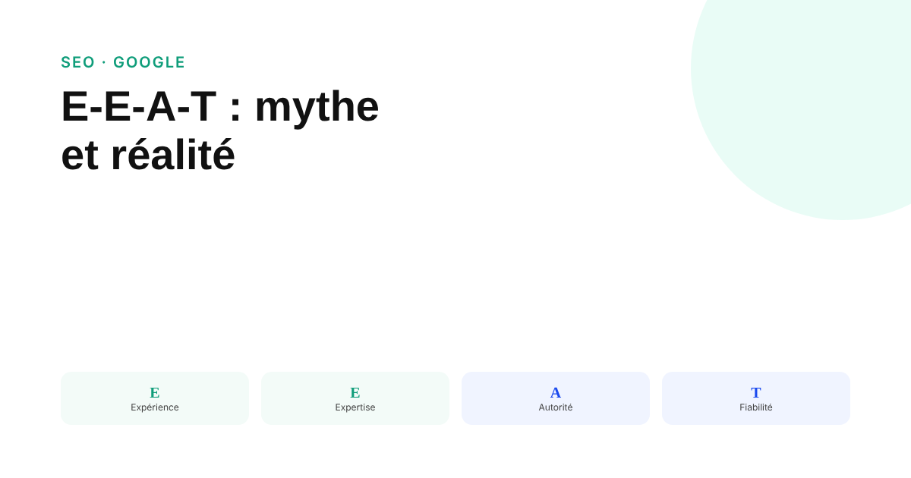
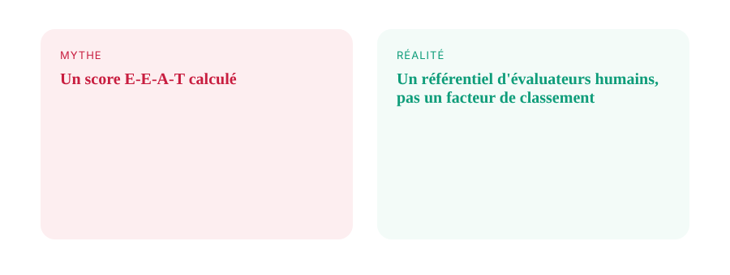

E-E-A-T : ce que Google vérifie vraiment, et ce qui relève du mythe SEO
« Score E-E-A-T », « algorithme E-E-A-T », « bio d'auteur obligatoire » : trois affirmations qui circulent largement, et que Google a démenties explicitement. Voici ce que le concept désigne réellement, d'après la documentation officielle.

Peu de sigles SEO génèrent autant de contenu approximatif que l'E-E-A-T. Pourtant, Google documente le concept de façon précise, et sa position officielle n'a pas varié depuis son introduction : l'E-E-A-T n'est pas un facteur de classement en soi. Beaucoup de contenus qui en parlent omettent cette nuance, ou la présentent comme dépassée alors qu'elle reste la position actuelle de Google.
D'où vient le concept, et ce qu'il désigne réellement
L'E-A-T (Expertise, Autorité, Fiabilité) existait depuis plusieurs années dans les Quality Rater Guidelines, le référentiel qu'utilisent des évaluateurs humains rémunérés par Google pour juger la qualité des résultats de recherche. Ces évaluations ne déterminent pas le classement d'une page précise : elles servent à mesurer la performance globale des systèmes de classement de Google, pour orienter leurs futurs ajustements. En décembre 2022, Google a ajouté un second E pour Expérience, avec une justification précise : certains contenus bénéficient davantage d'une expérience de première main que d'une expertise formelle — un avis sur un produit profite plus de quelqu'un qui l'a réellement utilisé que d'un expert théorique du secteur, alors qu'un conseil fiscal reste mieux servi par une expertise comptable établie.
Le mythe le plus répandu : un score ou un algorithme nommé ainsi
Google l'indique explicitement dans sa documentation : l'E-E-A-T lui-même n'est pas un facteur de classement spécifique. Ses systèmes tentent d'approximer ces critères via un ensemble de signaux combinés, pas via un module unique qui porterait ce nom. John Mueller, de l'équipe Search de Google, a par ailleurs affirmé directement qu'il n'existe aucun score E-A-T ou E-E-A-T calculé pour une page donnée. Présenter l'E-E-A-T comme un algorithme identifiable ou un chiffre à optimiser revient donc à décrire quelque chose que Google dit ne pas avoir.

Le deuxième mythe : la bio d'auteur obligatoire
Google encourage fortement l'ajout d'informations fiables sur l'auteur d'un contenu, et pose explicitement la question, dans sa documentation sur le contenu utile, de savoir si les bylines mènent vers des informations complémentaires crédibles sur leur auteur. C'est présenté comme un signal de confiance, pas comme une condition technique de classement : l'absence de bio visible n'entraîne aucune pénalité automatique isolée. Ce qui est explicitement sanctionné, en revanche, c'est la fabrication de faux profils d'auteurs — une pratique que Google cite nommément comme trompeuse.
Ce que Google décrit concrètement comme démonstration d'E-E-A-T
La documentation officielle sur le contenu utile donne des repères concrets : une expertise de première main et une connaissance approfondie du sujet, un sourcing clair avec des preuves de l'expertise mobilisée, des informations vérifiables sur l'auteur ou le site, et une réputation que quelqu'un qui chercherait des informations sur le site reconnaîtrait comme fiable ou faisant autorité sur son sujet. Aucune de ces notions ne se résume à une case technique à cocher : elles s'évaluent dans leur ensemble, et c'est précisément pour ça qu'aucun score unique ne peut raisonnablement les représenter.
Ce qui n'a pas changé en 2025-2026
Aucune annonce officielle de Google ne documente de refonte du cadre E-E-A-T lui-même sur cette période : les mises à jour des Quality Rater Guidelines ont continué d'affiner des exemples d'évaluation, sans modifier la structure du concept. Un contenu qui affirme qu'un « nouvel E-E-A-T 2026 » aurait remplacé l'ancien, sans renvoyer vers une page officielle de Google Search Central, relève du même folklore SEO que le score imaginaire : à vérifier systématiquement à la source avant de le relayer à un client.
FAQ
L'E-E-A-T est-il un facteur de classement Google ?
Non, pas directement. Google l'indique explicitement dans sa documentation : l'E-E-A-T n'est pas un facteur de classement spécifique. C'est un concept issu des Quality Rater Guidelines, le référentiel utilisé par des évaluateurs humains pour juger la qualité des résultats et aider Google à évaluer la performance de ses propres systèmes de classement.
Existe-t-il un score E-E-A-T calculé par Google ?
Non. John Mueller, de l'équipe Search de Google, l'a affirmé directement : il n'existe aucun score E-A-T ou E-E-A-T. Les évaluateurs humains donnent des appréciations qualitatives qui servent à mesurer la qualité du moteur, pas une note attribuée à chaque page.
Une page sans bio d'auteur visible est-elle automatiquement pénalisée ?
Non, pas mécaniquement. Google encourage fortement l'ajout d'informations d'auteur fiables comme signal de confiance, mais ne l'impose pas comme condition technique de classement. L'absence de bio d'auteur est un signal de confiance manquant parmi d'autres, pas une pénalité automatique isolée.
Envie d'un audit de contenu qui distingue signal réel et folklore SEO ?
Pour aller plus loin, voir la page SEO, et l'article Les core updates Google de 2026.
Pour continuer sur ce sujet.